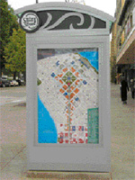

The State Street Spruce-up
ZD Studios designed the inside of Lambeau Field and the new Camp Randall. Now they've headed outdoors.
By Robert Gutsche, Jr.

Photo courtesy of ZD Studios |
State Street has survived the test of time in the last 20 years - shoppers, peddlers, protestors, even riots. But its design hasn't been so resilient.
Mark Schmitz, founder of Madison's ZD Studios, Inc., one of several businesses hired to redesign the State Street District, says the old State had too much concrete, dull lighting and dark, vague maps and signage for visitors.
This month, ZD's creations will emerge as the 200 block nears completion. Rows of custom light poles, colorful banners and updated, easy-to-read maps of downtown have already made their way down the 100 block from the Capitol.
"This is a more livable design for residents and businesses that takes care of what Madison is and represents what Madison is," says Schmitz, a principal and the company's creative director.
This new State Street - which has been going through the redesign process for several years - could likely be a design to last for at least the next 20 years. (Those in the know say the rule of thumb is that a streetscape will probably need a new look every 20 years.)
"State Street is an entertainment district," said Melanie Kranz, ZD's vice president and a principal. "Like other developments it competes with, State Street needs to be easy to navigate through, pleasing to the eye and a human space that you want to be in because it's comfortable while having energy and life. It needs to be entertaining."
ZD's work is already strongly represented throughout Madison and parts of Wisconsin. Schmitz and his team - which has grown from three employees in 1994 to 17 employees today - have redesigned logos, signs and other amenities at both Camp Randall and Lambeau Field. ZD creators also designed the Kohl Center's new floor.
Eighty percent of ZD's business deals in defining a client's brand and identification. The company also designs websites.
But the State Street design was unlike any other project. Frankly, it is one of the company's largest projects - creating a brand and a significant streetscape design for six entire blocks. And not just any blocks, but those of Madison's best-known area. "People around the world, when they think of Madison, they think of State Street," Schmitz says. "It was a big responsibility."
The State Street redesign at ZD Studios started with what the team calls a "thumb print," basically an icon that all other designs should center around. The logo is on everything from light poles and bus stops to merchants' windows, an attempt to tie the street together. "This project was all about branding," says Kranz. "You start with the brand and infuse it into everything."
The logo - a line circling the words "State Street," the "A" in the shape of the State Capitol - has become so popular that some businesses have already started using it in products and advertising. The House of Wisconsin Cheese, for instance, has plastered the new logo on T-shirts.

Photos courtesy of ZD Studios |
ZD's design also sets each street block apart from the rest. Customized colored banners on the light poles separate the blocks into unique shopping districts (the 100 block is purple, for example). This is a small but important detail in design, Kranz says, but the colors will also be used in signs that direct people to public spaces (in the capitol) and to places like the Kohl Center or Overture Center.
"We're trying to get people to recognize that there are different blocks to State Street," says Kranz. "For one thing, it will help people like tourists find the types of retailers they want more easily."
Beyond designing around State Street's eclectic and sometimes eccentric stores and people, designers had another challenge: retaining those parts that make the street so special. For many, that means the way the it looks at night, with strands of lights draping the trees. The problem, though, was that for some years those lights have changed, often removed once they got too old or never displayed at all. "I don't know if you noticed, but toward the end, all that was hanging in the trees were balls of lights. They always got tangled and just didn't look very good," says Schmitz.
So, his team made a point of replacing the strings of lights with tiny LED lights built into the light poles to add to the romantic image of State Street. "Before, the lights were really a pain, but people loved them," Schmitz says. "We felt we needed to bring that feature into the design."
ZD came on board in 2001, after other groups as well as the public worked on an overall strategic design, says Bill Fruhling, a Madison city planner. While the company came in at the tail end, ZD has made a major impact. "We know how well they listened, how well they worked and how well they worked with other parties who might have had a say in what was going on," says Fruhling.
Without funding delays, Fruhling says the entire street redesign could be completed by 2007.
Robert Gutsche, Jr., is a freelance writer living in Madison.
| Madison Magazine - March 2005 |
|